Hope Theatre
Branding / Type Design
Hope Theatre is a social enterprise that provides meaningful employment and creative empowerment through theatre to help formerly incarcerated women overcome challenges of reintegration. This case study covers my contribution of art direction and branding.
Collaborators
Recognition
Applied Arts Student Awards, Logo Applications - Single, 2026
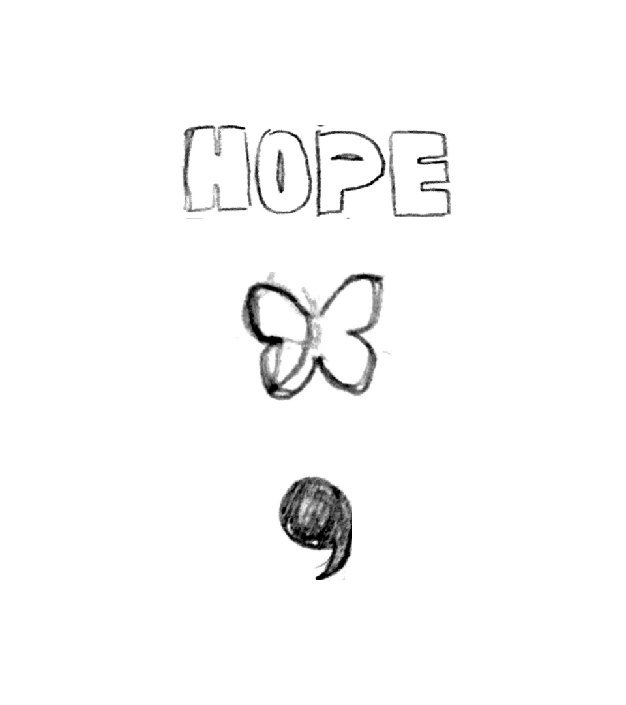
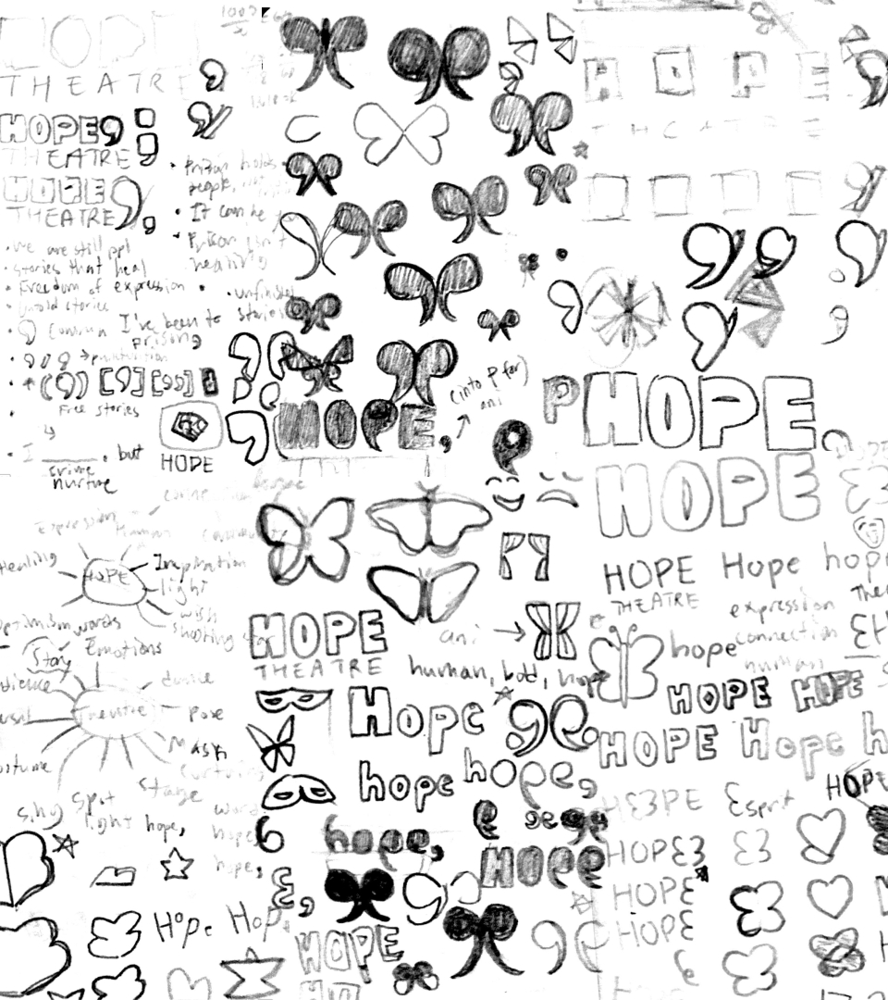
Symbols of hope and transformation like the butterfly, and things related to storytelling like punctuation were explored.
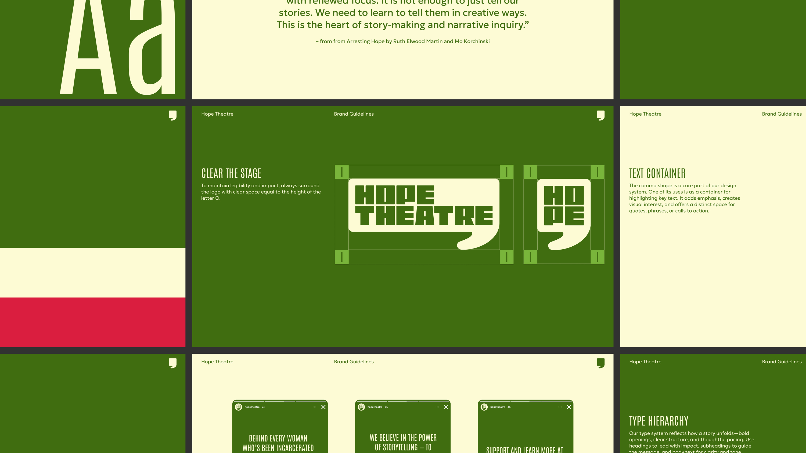
The logo is a custom, bold and expressive wordmark paired with a container that is taken from the comma in our custom typeface, transforming into a speech bubble that implies there’s more to the story to be told. The mark works as a design system that can adapt across multiple applications.
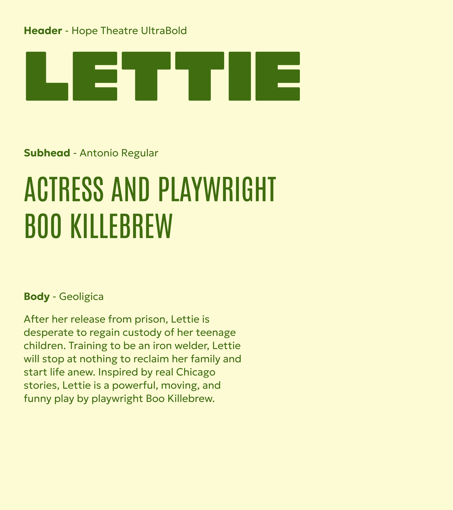
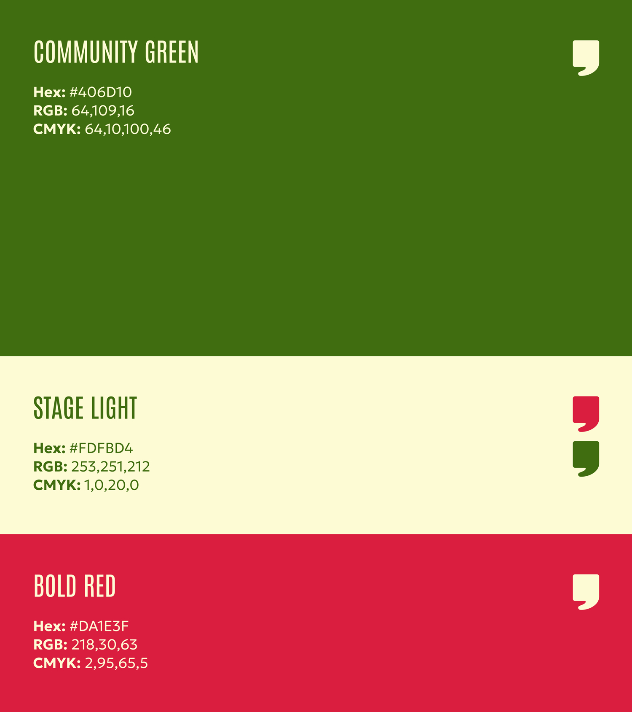
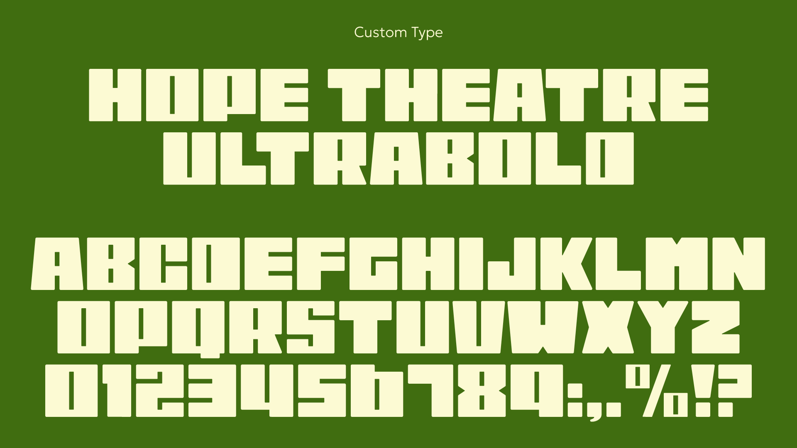
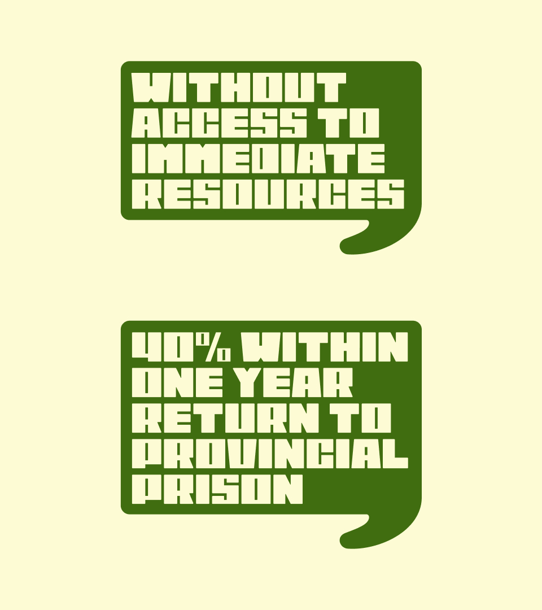
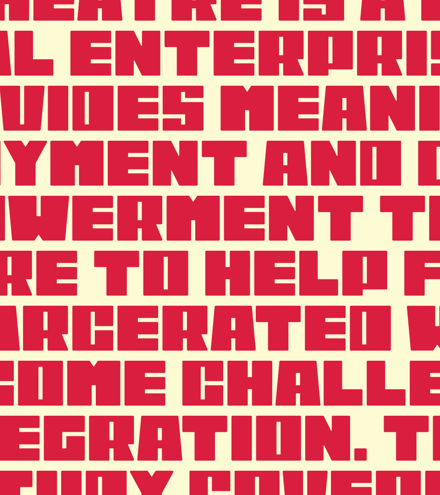
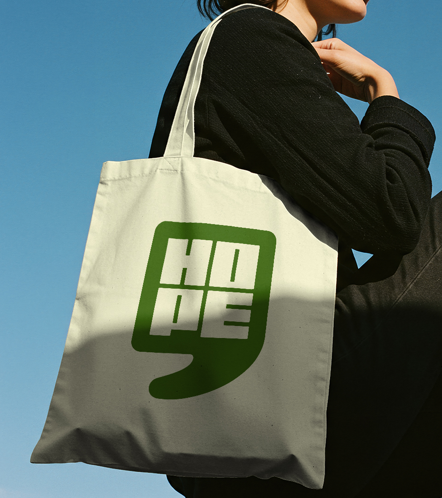
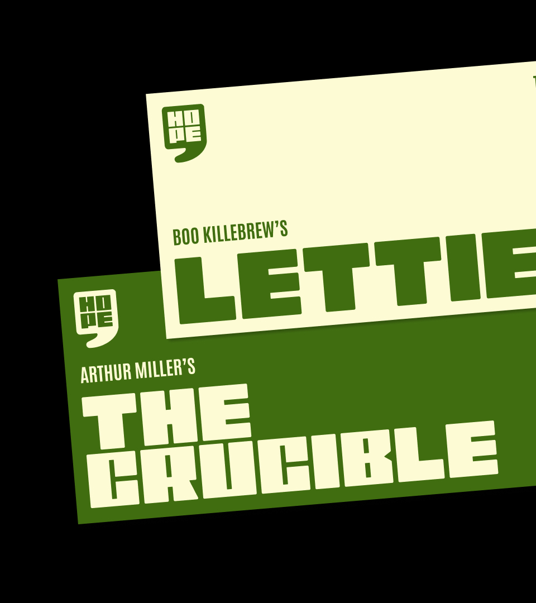
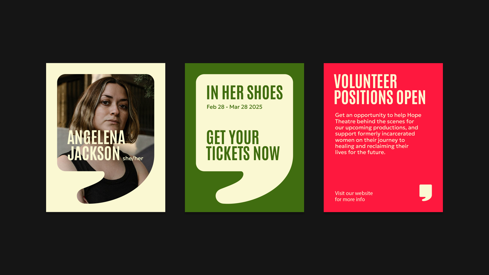
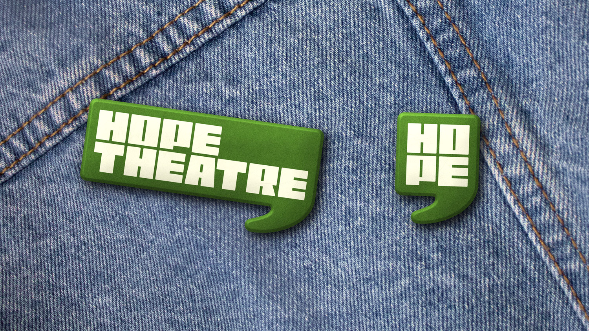
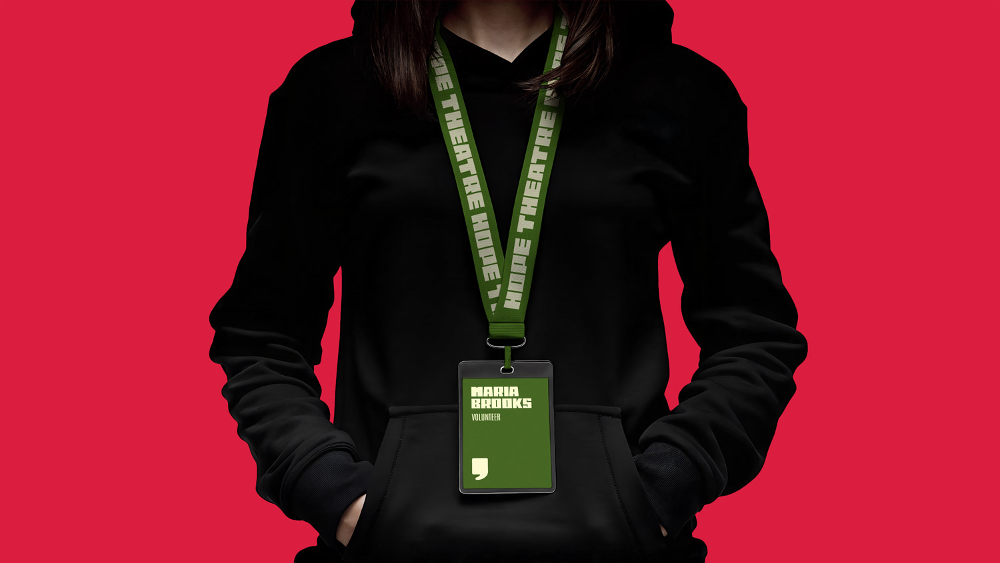
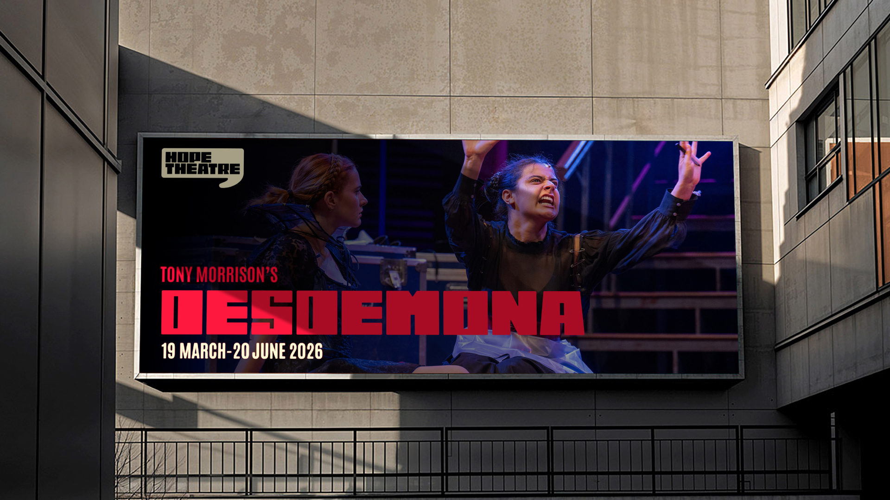